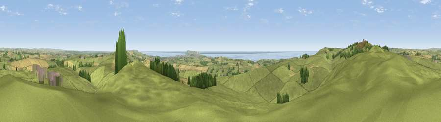

Viewpoint near Portesham
#2230 in England · top 10% of its area beats it · near PorteshamWhere it is
The exact computed spot (SY 62862 86725). Click the marker for map links.
The view, rendered

A 360° render of this exact spot computed from the terrain model, tree cover and land cover — summer colours, afternoon light, calibrated against photographs of famous viewpoints. Real trees, hedges and buildings will differ in detail.
The panorama
Grey silhouette: terrain skyline in each direction (720 bearings, Earth curvature and refraction included). Dashed green: skyline with trees (+15 m) and buildings (+8 m) as obstacles. Blue strip: how far the ground is visible on each bearing.
Where the view opens
Wedge length = distance to the farthest visible ground on that bearing (vegetation-aware). Rings at 10, 25 and 50 km.
What fills the view
68% grassland · 16% cropland · 8% water · 4% woodland · 3% built-up
Angular shares of the visible panorama (visual magnitude), not map area. Landscape diversity 0.45 (0–1 Shannon).
Key numbers
More beautiful places nearby
The staircase of upgrades: each row has a higher view potential than everything closer. Driving times are estimates from straight-line distance, calibrated against real road routing — check an actual route before setting out.
| Place | Direction | Drive | Score |
|---|---|---|---|
| Viewpoint near Martinstown | ESE · 0 km | ~2 min | 76.2 |
| Viewpoint near Portesham | WNW · 2 km | ~5 min | 82.7 |
| Viewpoint near Abbotsbury | W · 7 km | ~14 min | 89.0 |
| Viewpoint near West Bexington | W · 8 km | ~16 min | 89.5 |
| The Knoll | W · 9 km | ~18 min | 91.0 |
50.67899, -2.52698 · source: screening · position refined by local search. Computed location — check access rights before visiting.